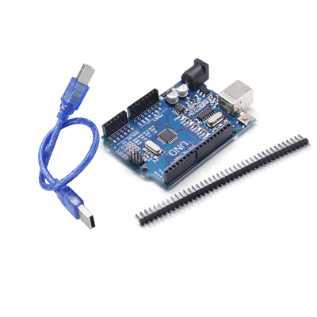

Arduino UNO 兼容板的使用
介绍
这是一款替代 Arduino UNO 的廉价解决方案，采用 Atmel Atmega328 微处理控制器：

安装和使用
使用 Arduino IDE 进行开发，Board 直接选择官方的 Arduino AVR Boards -> Arduino Uno.
测试
使用官方的 Example Blink 例程测试。
/*
Blink
Turns an LED on for one second, then off for one second, repeatedly.
Most Arduinos have an on-board LED you can control. On the UNO, MEGA and ZERO
it is attached to digital pin 13, on MKR1000 on pin 6. LED_BUILTIN is set to
the correct LED pin independent of which board is used.
If you want to know what pin the on-board LED is connected to on your Arduino
model, check the Technical Specs of your board at:
https://www.arduino.cc/en/Main/Products
modified 8 May 2014
by Scott Fitzgerald
modified 2 Sep 2016
by Arturo Guadalupi
modified 8 Sep 2016
by Colby Newman
This example code is in the public domain.
https://www.arduino.cc/en/Tutorial/BuiltInExamples/Blink
*/
// the setup function runs once when you press reset or power the board
void setup() {
// initialize digital pin LED_BUILTIN as an output.
pinMode(LED_BUILTIN, OUTPUT);
}
// the loop function runs over and over again forever
void loop() {
digitalWrite(LED_BUILTIN, HIGH); // turn the LED on (HIGH is the voltage level)
delay(1000); // wait for a second
digitalWrite(LED_BUILTIN, LOW); // turn the LED off by making the voltage LOW
delay(1000); // wait for a second
}
comments powered by Disqus